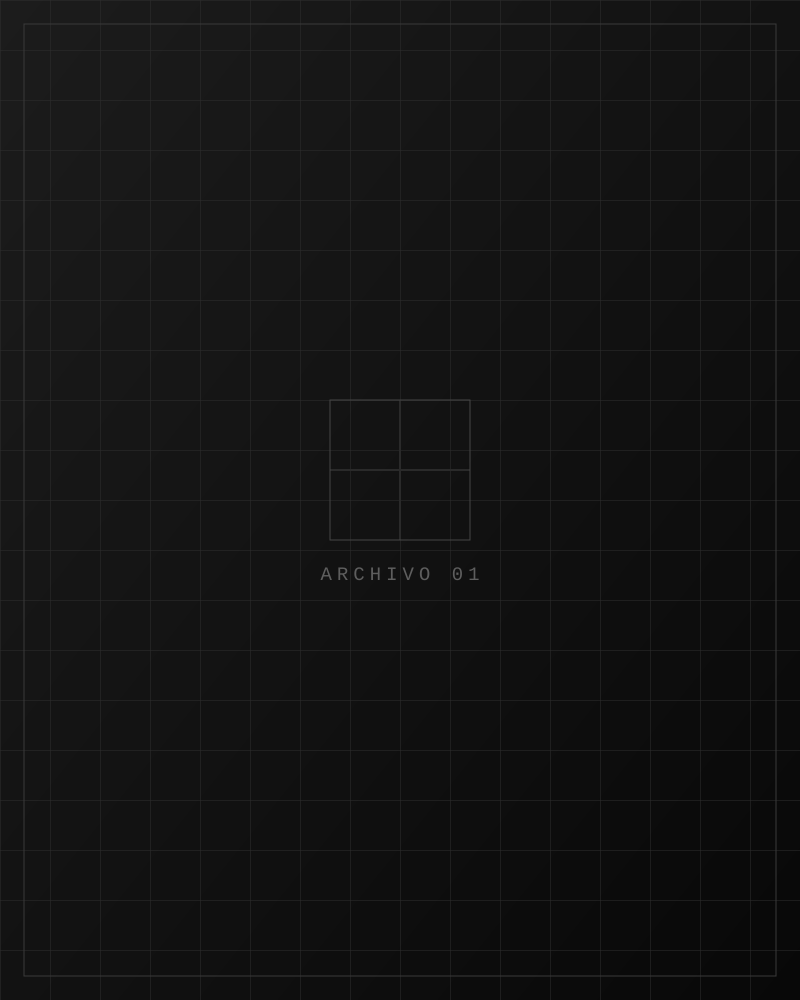

01 / ARQUITECTURA
Reel de Infraestructura y Arquitectura
La ingeniería y la arquitectura no solo se diseñan, se proyectan al mundo. Capturamos obras civiles, infraestructuras y plantas de energía con tomas aéreas y detalles a pie de obra.
VER VIDEO